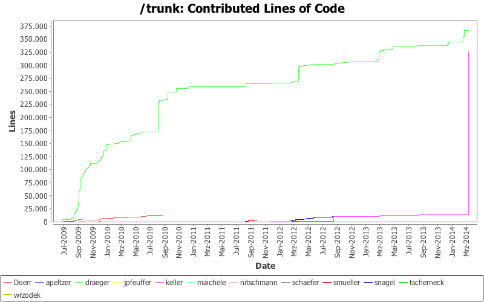
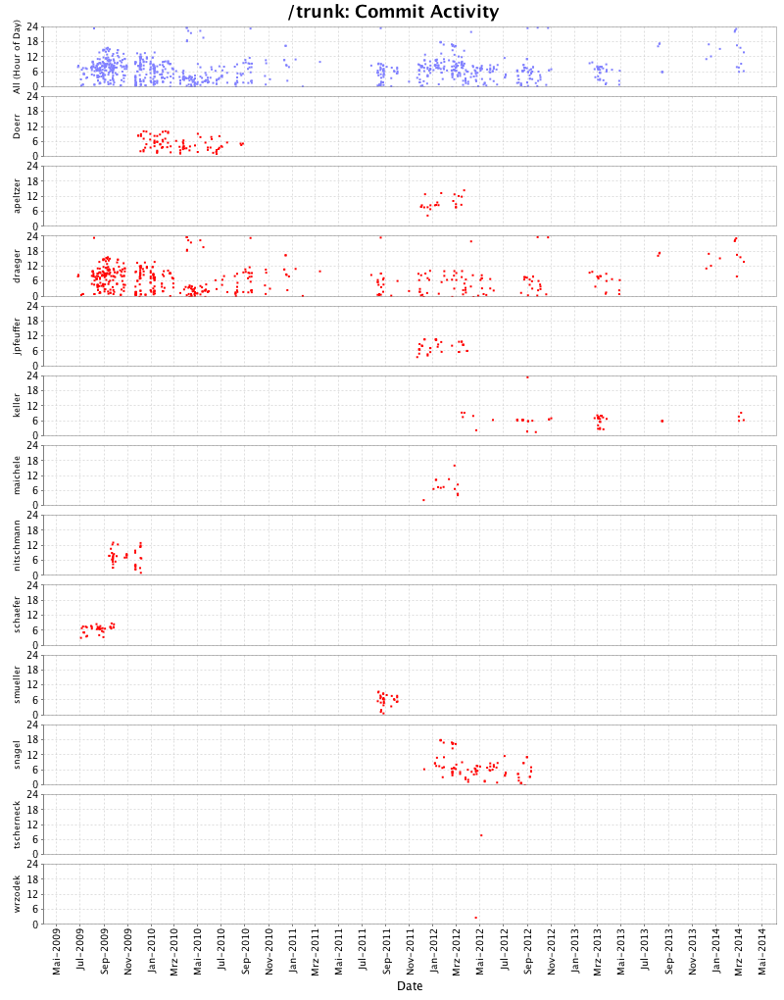
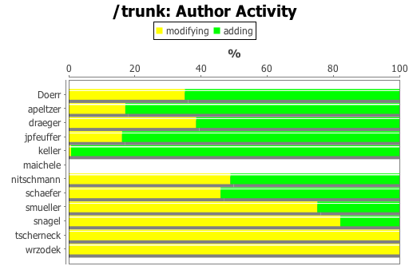
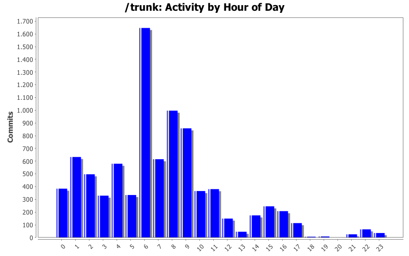
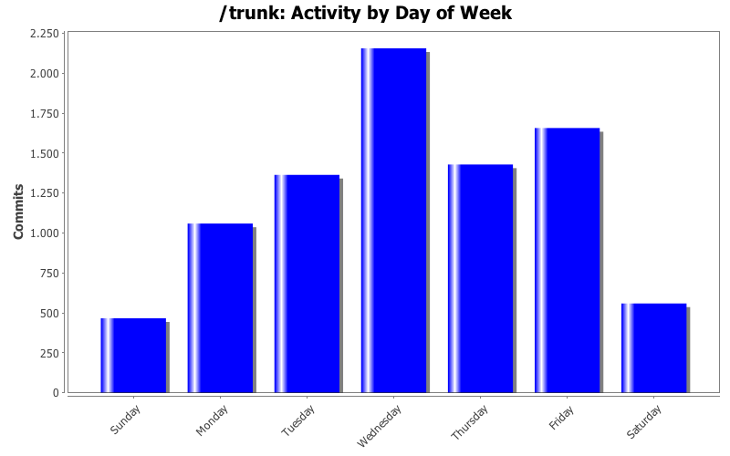

| Author | Author Id | Changes | Lines of Code | Lines per Change |
|---|---|---|---|---|
| Totals | 8515 (100.0%) | 731123 (100.0%) | 85.8 | |
| draeger | draeger | 6093 (71.6%) | 367047 (50.2%) | 60.2 |
| keller | keller | 1337 (15.7%) | 326530 (44.7%) | 244.2 |
| Doerr | Doerr | 135 (1.6%) | 12216 (1.7%) | 90.4 |
| snagel | snagel | 416 (4.9%) | 9644 (1.3%) | 23.1 |
| schaefer | schaefer | 154 (1.8%) | 5926 (0.8%) | 38.4 |
| nitschmann | nitschmann | 142 (1.7%) | 4192 (0.6%) | 29.5 |
| smueller | smueller | 129 (1.5%) | 3285 (0.4%) | 25.4 |
| jpfeuffer | jpfeuffer | 67 (0.8%) | 2080 (0.3%) | 31.0 |
| apeltzer | apeltzer | 27 (0.3%) | 200 (0.0%) | 7.4 |
| wrzodek | wrzodek | 1 (0.0%) | 2 (0.0%) | 2.0 |
| tscherneck | tscherneck | 1 (0.0%) | 1 (0.0%) | 1.0 |
| maichele | maichele | 13 (0.2%) | 0 (0.0%) | 0.0 |
| Author | Up to 3/2013 | 4/2013 | 5/2013 | 6/2013 | 7/2013 | 8/2013 | 9/2013 | 10/2013 | 11/2013 | 12/2013 | 1/2014 | 2/2014 | 3/2014 |
|---|---|---|---|---|---|---|---|---|---|---|---|---|---|
| Totals | 379843 (100.0%) | 6139 (100.0%) | 0 (-) | 0 (-) | 0 (-) | 2599 (100.0%) | 0 (-) | 0 (-) | 0 (-) | 6326 (100.0%) | 203 (100.0%) | 22060 (100.0%) | 313953 (100.0%) |
| draeger | 330002 (86.9%) | 6139 (100.0%) | 0 (-) | 0 (-) | 0 (-) | 1615 (62.1%) | 0 (-) | 0 (-) | 0 (-) | 6326 (100.0%) | 203 (100.0%) | 22055 (100.0%) | 707 (0.2%) |
| keller | 12295 (3.2%) | 0 (0.0%) | 0 (-) | 0 (-) | 0 (-) | 984 (37.9%) | 0 (-) | 0 (-) | 0 (-) | 0 (0.0%) | 0 (0.0%) | 5 (0.0%) | 313246 (99.8%) |
| Doerr | 12216 (3.2%) | 0 (0.0%) | 0 (-) | 0 (-) | 0 (-) | 0 (0.0%) | 0 (-) | 0 (-) | 0 (-) | 0 (0.0%) | 0 (0.0%) | 0 (0.0%) | 0 (0.0%) |
| snagel | 9644 (2.5%) | 0 (0.0%) | 0 (-) | 0 (-) | 0 (-) | 0 (0.0%) | 0 (-) | 0 (-) | 0 (-) | 0 (0.0%) | 0 (0.0%) | 0 (0.0%) | 0 (0.0%) |
| schaefer | 5926 (1.6%) | 0 (0.0%) | 0 (-) | 0 (-) | 0 (-) | 0 (0.0%) | 0 (-) | 0 (-) | 0 (-) | 0 (0.0%) | 0 (0.0%) | 0 (0.0%) | 0 (0.0%) |
| nitschmann | 4192 (1.1%) | 0 (0.0%) | 0 (-) | 0 (-) | 0 (-) | 0 (0.0%) | 0 (-) | 0 (-) | 0 (-) | 0 (0.0%) | 0 (0.0%) | 0 (0.0%) | 0 (0.0%) |
| smueller | 3285 (0.9%) | 0 (0.0%) | 0 (-) | 0 (-) | 0 (-) | 0 (0.0%) | 0 (-) | 0 (-) | 0 (-) | 0 (0.0%) | 0 (0.0%) | 0 (0.0%) | 0 (0.0%) |
| jpfeuffer | 2080 (0.5%) | 0 (0.0%) | 0 (-) | 0 (-) | 0 (-) | 0 (0.0%) | 0 (-) | 0 (-) | 0 (-) | 0 (0.0%) | 0 (0.0%) | 0 (0.0%) | 0 (0.0%) |
| apeltzer | 200 (0.1%) | 0 (0.0%) | 0 (-) | 0 (-) | 0 (-) | 0 (0.0%) | 0 (-) | 0 (-) | 0 (-) | 0 (0.0%) | 0 (0.0%) | 0 (0.0%) | 0 (0.0%) |
| wrzodek | 2 (0.0%) | 0 (0.0%) | 0 (-) | 0 (-) | 0 (-) | 0 (0.0%) | 0 (-) | 0 (-) | 0 (-) | 0 (0.0%) | 0 (0.0%) | 0 (0.0%) | 0 (0.0%) |
| tscherneck | 1 (0.0%) | 0 (0.0%) | 0 (-) | 0 (-) | 0 (-) | 0 (0.0%) | 0 (-) | 0 (-) | 0 (-) | 0 (0.0%) | 0 (0.0%) | 0 (0.0%) | 0 (0.0%) |
| maichele | 0 (0.0%) | 0 (0.0%) | 0 (-) | 0 (-) | 0 (-) | 0 (0.0%) | 0 (-) | 0 (-) | 0 (-) | 0 (0.0%) | 0 (0.0%) | 0 (0.0%) | 0 (0.0%) |




